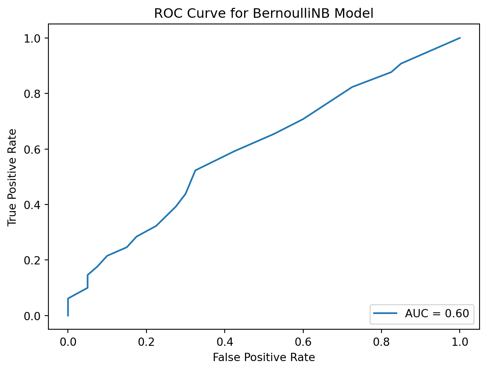

Predicting Work Trends Across Industries with Naive Bayes: Remote or On-Site
Probability theory and random variables, Naive Bayes classifier for multivariate Bernoulli models
news
code
analysis
plot
Author
Heba Nusair
Published
November 25, 2023
Introduction:
As we navigate through the evolving landscape of the 2023 job market, we are witnessing a significant shift in work methods. More people are embracing Work From Home (WFH) while others continue with Work On Site (WOS). This post helps to understand how these work methods vary across different jobs in the USA.
My Approach:
For this analysis, I’ve utilized the Naive Bayes classifier for multivariate Bernoulli models. This method is excellent for sorting jobs into two main categories: WFH and WOS. It’s a practical choice for my study because it efficiently handles binary data—like choosing between remote or on-site work.
About the Data:
The data comes from a 2023 survey of 850 participants from various occupations. Participants were asked about their industry sector and working method. To respect data confidentiality, we’ve modified and anonymized the dataset. This ensures compliance with data privacy guidelines without affecting the overall analysis and insights.
The survey participants from workers and their working method (WFH, or WON).
Industry Breakdown:
The study categorized 20 main category for jobs according to the North American Industry Classification System (NAICS), aligning with the 6-digit Standard Occupational Classification (SOC) system from the U.S. Bureau of Labor Statistics (BLS). Here’s a table of these industry sectors:
#
The occupations categories are based on the 6-digit (SOC) system from the U.S. (BLS)
Industry Sector: Occupational Classification
1
Number of jobs in NAICS sector 11
(Agriculture, Forestry, Fishing and Hunting)
2
cns02 Number of jobs in NAICS sector 21
(Mining, Quarrying, and Oil and Gas Extraction)
3
cns03 Number of jobs in NAICS sector 22
(Utilities)
4
cns04 Number of jobs in NAICS sector 23
(Construction)
5
cns05 Number of jobs in NAICS sector 31‐33
(Manufacturing)
6
cns06 Number of jobs in NAICS sector 42
(Wholesale Trade)
7
cns07 Number of jobs in NAICS sector 44‐45
(Retail Trade)
8
cns08 Number of jobs in NAICS sector 48‐49
(Transportation and Warehousing)
9
cns09 Number of jobs in NAICS sector 51
(Information)
10
cns10 Number of jobs in NAICS sector 52
(Finance and Insurance)
11
cns11 Number of jobs in NAICS sector 53
(Real Estate and Rental and Leasing)
12
cns12 Number of jobs in NAICS sector 54
(Professional, Scientific, and Technical Services)
13
cns13 Number of jobs in NAICS sector 55
(Management of Companies and Enterprises)
14
cns14 Number of jobs in NAICS sector 56
(Administrative and Support and Waste Management and Remediation Services)
15
cns15 Number of jobs in NAICS sector 61
(Educational Services)
16
cns16 Number of jobs in NAICS sector 62
(Health Care and Social Assistance)
17
cns17 Number of jobs in NAICS sector 71
(Arts, Entertainment, and Recreation)
18
cns18 Number of jobs in NAICS sector 72
(Accommodation and Food Services)
19
cns19 Number of jobs in NAICS sector 81
(Other Services [except Public Administration])
20
cns20 Number of jobs in NAICS sector 92
(Public Administration)
Goal: My goal is to provide a clear and real picture of the changing work styles. I am not just analyzing numbers; I am uncovering the stories they tell about how people are adapting to new work environments, be it remotely or on-site.
Why I Chose the Naive Bayes Classifier for Multivariate Bernoulli Models:
In my exploration of work methods—remote and on-site—the Naive Bayes classifier for multivariate Bernoulli models shines with its simplicity and effectiveness. It excels at evaluating probabilities, helping determine whether a job is more likely to be remote or on-site based on its industry sector. This algorithm’s strength lies in its straightforward approach, providing clear baseline assessments that guide our analysis across different industry sectors. Dive Into the Code Behind the Analysis:
x: The industry sector: [jobs categories From 1 to 20]
y: The work method: 1 for WOS [Work on Site], 2 for WFH [Work From Home]
Code
import pandas as pdfrom sklearn.model_selection import train_test_splitfrom sklearn.naive_bayes import BernoulliNBfrom sklearn.metrics import classification_report, accuracy_scorefrom sklearn.preprocessing import OneHotEncoderimport os# Load the datasetdf = pd.read_csv('C:/Users/NUSAI/Desktop/Machine learning/HebaNu.github.io/HebaNu.github.io/HebaNu/posts/Probability theory and random variables/updated_POST1.csv')# Drop rows where any cell is NaN in the 'Work Method' columndf = df.dropna(subset=['Work Method'])# One-hot encodingencoder = OneHotEncoder(sparse=False)X = encoder.fit_transform(df[[' industry sector']]) # includes 20 occupation types from NAICS for 6-digit SOC- U.S. BLS# Target variabley = df['Work Method']# 1 for WOS [Work on Site], 2 for WFH [Work From Home]# Split the datasetX_train, X_test, y_train, y_test = train_test_split(X, y, test_size=0.2, random_state=42)# Train the Bernoulli Naive Bayes modelmodel = BernoulliNB()model.fit(X_train, y_train)# Make predictions and evaluate the modely_pred = model.predict(X_test)# Output the classification report and accuracyprint(classification_report(y_test, y_pred, zero_division=0))print(f'Accuracy: {accuracy_score(y_test, y_pred)}')
C:\Users\NUSAI\anaconda3\Lib\site-packages\sklearn\preprocessing\_encoders.py:972: FutureWarning:
`sparse` was renamed to `sparse_output` in version 1.2 and will be removed in 1.4. `sparse_output` is ignored unless you leave `sparse` to its default value.
Insights from Our Model: Understanding the Work Trends
The results from our BernoulliNB model offer fascinating insights into the current work trends. The model is predicting class 2.0 for WFH [Work From Home] with high precision (76%) and recall (100%), which means for this class, it performs well both in terms of the accuracy of the positive predictions it makes (precision) and its ability to find all the positive instances (recall).
For class 1.0, however, the model does not predict any instances correctly, which suggests that either there’s an issue with the distribution of your classes (perhaps class 1.0 is underrepresented), or that the features do not provide enough information to distinguish class 1.0 from class 2.0. The overall accuracy of the model is 76.47%, which means that it correctly predicts the class for 76.47% of the test set.
The macro avg and weighted avg for precision, recall, and f1-score provide a summary of the effectiveness of the model across the classes. The low macro avg for precision and f1-score indicates that one of the classes does not perform well, which we already know is class 1.0.
The f1-score is a harmonic mean of precision and recall and is a useful metric when you have classes that are imbalanced. In my case, the f1-score for class 1.0 [WOS] is 0.00, indicating poor performance for this class.
Generally, the Naive Bayes classifier for multivariate Bernoulli models proves to be an effective and reliable tool for classification tasks. Its ability to handle binary data, like our work method categories, contributes to its robustness and applicability in various analytical scenarios.
To create plots that visualize the performance of your BernoulliNB model, you would typically look at the confusion matrix, precision-recall, and possibly ROC curves. Below are examples of how you could generate each of these plots using matplotlib and scikit-learn:
Confusion Matrix: Visualizes the correct and incorrect predictions compared to the actual values.
Code
from sklearn.metrics import confusion_matriximport seaborn as snsimport matplotlib.pyplot as plt# Assuming y_test and y_pred are already defined from BernoulliNB modelcm = confusion_matrix(y_test, y_pred)sns.heatmap(cm, annot=True, fmt="d")plt.title('Confusion Matrix for BernoulliNB Model')plt.xlabel('Predicted Labels')plt.ylabel('True Labels')plt.show()

ROC Curve: Plots the true positive rate against the false positive rate.
Code
from sklearn.metrics import roc_curve, aucfrom sklearn.metrics import RocCurveDisplayimport matplotlib.pyplot as plt# Adjust y_test to have binary labels 0 and 1y_test_binary = y_test.replace({1: 0, 2: 1})# Get predicted probabilities for the positive class (e.g., class 2)y_pred_prob = model.predict_proba(X_test)[:, 1] # Index 1 for the probability of class 2# Calculate the ROC curvefpr, tpr, thresholds = roc_curve(y_test_binary, y_pred_prob)# Calculate the AUC (Area Under Curve)roc_auc = auc(fpr, tpr)# Plot the ROC curvedisp = RocCurveDisplay(fpr=fpr, tpr=tpr, roc_auc=roc_auc)disp.plot()plt.title('ROC Curve for BernoulliNB Model')plt.show()
Conclusions:
Through our analysis, we aim to provide a clear picture of the current job market and its evolving nature. Whether it’s adapting to remote work setups or understanding the necessity of on-site roles, our study sheds light on these important trends.
Final Thoughts:
As the world of work continues to change, we’re here to keep you informed and help you understand these shifts. Stay tuned for more insights and analyses on the changing job landscape!